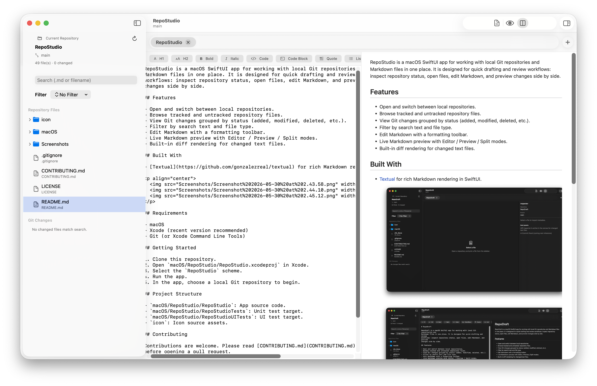
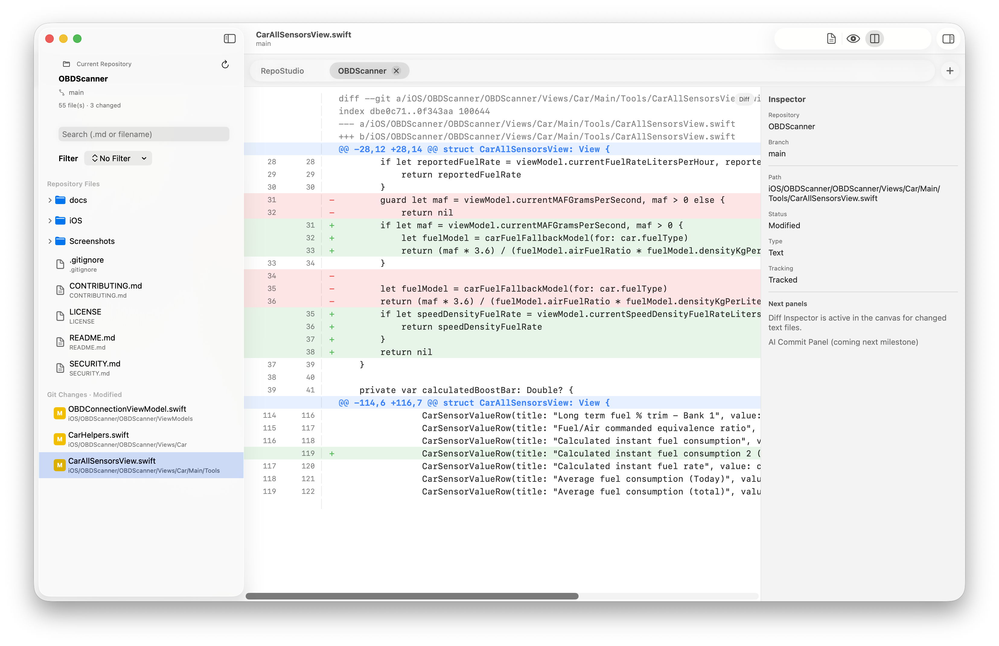
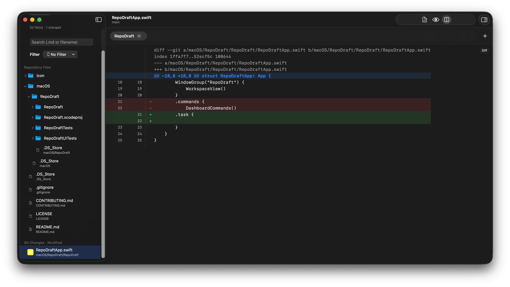
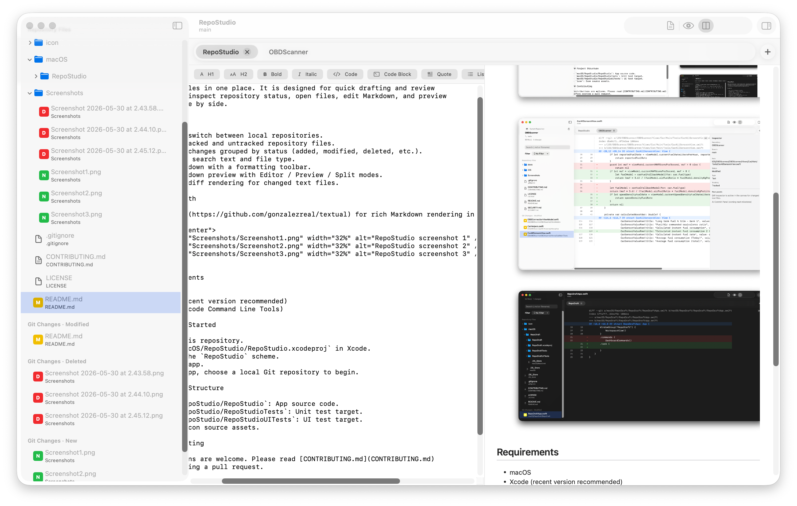

Repository dashboard
Open local repositories, browse files, and scan tracked or untracked changes by status in one view.
Made for focused repo sessions
RepoStudio is a native macOS app for developers who live in Markdown and Git. Open a local repository, inspect changes, edit docs, and preview everything side by side without account setup.

Workflow first
The app focuses on practical tasks you repeat every day: checking what changed, updating markdown files, and validating output immediately.
Open local repositories, browse files, and scan tracked or untracked changes by status in one view.
Write with a formatting toolbar and keep flow while switching between editor, preview, and split modes.
Preview markdown in real time and inspect diff output for changed text files before you commit.
Inside the app
These screenshots are from the actual RepoStudio application.


